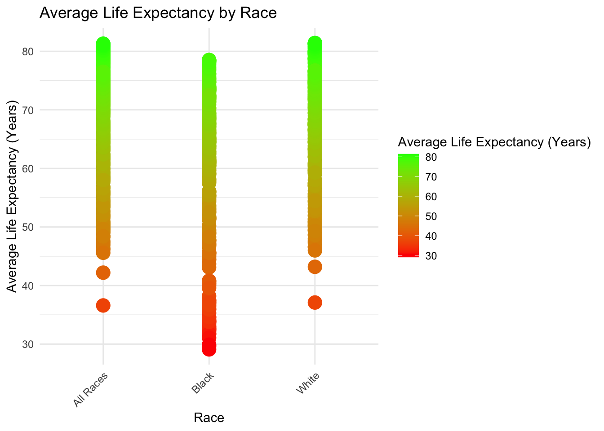

library(readr)
library(dplyr)
library(ggplot2)CDC Data Exercise
This dataset of U.S. mortality trends since 1900 highlights the differences in age-adjusted death rates and life expectancy at birth by race and sex. The dataset contains 1,071 observations along with five columns. The five variables are year, race, sex, average life expectancy, and age-adjusted death rate.
The dataset can be downloaded here.
#load the file
death_rate <- read_csv("NCHS_-_Death_rates_and_life_expectancy_at_birth_20240702.csv")Rows: 1071 Columns: 5
── Column specification ────────────────────────────────────────────────────────
Delimiter: ","
chr (2): Race, Sex
dbl (3): Year, Average Life Expectancy (Years), Age-adjusted Death Rate
ℹ Use `spec()` to retrieve the full column specification for this data.
ℹ Specify the column types or set `show_col_types = FALSE` to quiet this message.head(death_rate)# A tibble: 6 × 5
Year Race Sex Average Life Expectancy (Y…¹ Age-adjusted Death R…²
<dbl> <chr> <chr> <dbl> <dbl>
1 1900 All Races Both Sexes 47.3 2518
2 1901 All Races Both Sexes 49.1 2473.
3 1902 All Races Both Sexes 51.5 2301.
4 1903 All Races Both Sexes 50.5 2379
5 1904 All Races Both Sexes 47.6 2502.
6 1905 All Races Both Sexes 48.7 2424.
# ℹ abbreviated names: ¹`Average Life Expectancy (Years)`,
# ²`Age-adjusted Death Rate`#Remove "Both Sexes" from the "Sex" column and keep only male and female
death2 <- death_rate %>%
filter(Sex != "Both Sexes")#View the new dataset to ensure correct variables
View(death2)# Summary statistics for Average Life Expectancy
life_expectancy_summary <- summary(death2$`Average Life Expectancy (Years)`)
print(life_expectancy_summary) Min. 1st Qu. Median Mean 3rd Qu. Max. NA's
29.10 57.12 66.70 64.52 73.90 81.40 4 # Histogram of Average Life Expectancy
AvgLifeExp_plot <- ggplot(death2, aes(x = `Average Life Expectancy (Years)`)) +
geom_histogram(binwidth = 1, fill = "orange", color = "black") +
labs(title = "Distribution of Average Life Expectancy", x = "Average Life Expectancy (years)", y = "Count")
AvgLifeExp_plot# Summary statistics for Age-adjusted Death Rate
death_rate_summary <- summary(death2$`Age-adjusted Death Rate`)
print(death_rate_summary) Min. 1st Qu. Median Mean 3rd Qu. Max.
611.3 1025.2 1567.2 1599.1 2057.0 3845.7 # Histogram of Age-adjusted Death Rate
ggplot(death2, aes(x = `Age-adjusted Death Rate`)) +
geom_histogram(binwidth = 50, fill = "red", color = "black") +
labs(title = "Distribution of Age-adjusted Death Rate", x = "Age-adjusted Death Rate", y = "Count")#plot with gradient color scale
AvgLife_Race_plot <- ggplot(death2, aes(x = Race, y = `Average Life Expectancy (Years)`, color = `Average Life Expectancy (Years)`)) +
geom_point(size = 5) +
scale_color_gradient(low = "red", high = "green") +
labs(title = "Average Life Expectancy by Race", x = "Race", y = "Average Life Expectancy (Years)") +
theme_minimal() +
theme(axis.text.x = element_text(angle = 45, hjust = 1))
AvgLife_Race_plot
Making Synthetic Data
This section contributed by Austin Thrash - FFK221
# This chunk recreates the "Year", "Race", and "Sex" variables.
# PROMPT USED:
#I need to create a dataset replicating an already exisiting dataset in R studio, The first variables I'd like replicate is 'Year' 'Race' and 'Sex'. There are 714 observations. The year column documents the year from 1900 to 2018 for each race and gender. The race variable contains 'All Races', 'Black', and 'White', while the gender variable contains 'Male' or 'Female'.
# Define the variables
years <- 1900:2018 # 119 years
races <- c("All Races", "Black", "White")
genders <- c("Male", "Female")
# Calculate the number of repetitions needed
num_years <- length(years)
num_races <- length(races)
num_genders <- length(genders)
# Create the data frame
synth_data <- expand.grid(Year = years, Race = races, Sex = genders) %>%
slice_sample(n = 714)
# Ensure the data frame has 714 observations
synth_data <- synth_data[1:714, ]
# View the dataset
head(synth_data) Year Race Sex
1 1942 White Female
2 1905 All Races Male
3 2015 Black Male
4 1971 Black Female
5 1988 White Male
6 1977 All Races Female# This chunk recreates the Average Life expectancy (years)
# PROMPT USED:
# The next variable Id like to add to that same dataframe is Average life expectancy, Here is a summary of the variable:
# Min. 1st Qu. Median Mean 3rd Qu. Max. NA's
# 29.10 57.12 66.70 64.52 73.90 81.40 4
# Set seed for reproducibility
set.seed(123)
# Define the summary statistics
original_summary <- c(
Min = 29.10,
Q1 = 57.12,
Median = 66.70,
Mean = 64.52,
Q3 = 73.90,
Max = 81.40
)
# Generate random life expectancy values using the quantiles
quantiles <- c(0, 0.25, 0.5, 0.75, 1)
values <- c(29.10, 57.12, 66.70, 73.90, 81.40)
# Interpolation function
interp_function <- approxfun(quantiles, values, rule = 2)
# Generate synthetic data
synthetic_life_expectancy <- interp_function(runif(710))
# Add the NA values
synthetic_life_expectancy <- c(synthetic_life_expectancy, rep(NA, 4))
# Shuffle the values to randomly distribute the NA values
synthetic_life_expectancy <- sample(synthetic_life_expectancy)
# Add the life expectancy to the existing dataframe
synth_data$Average_Life_Expectancy <- synthetic_life_expectancy
# View the summary of the synthetic data
summary(synth_data$Average_Life_Expectancy) Min. 1st Qu. Median Mean 3rd Qu. Max. NA's
29.15 57.30 66.03 63.35 73.99 81.38 4 # This chunk recreates the age-adjusted death rate
# PROMPT USED:
# The last variable Id like to add to the same data set is age adjusted death rate, here is a summary of the variable:
# Min. 1st Qu. Median Mean 3rd Qu. Max.
# 611.3 1025.2 1567.2 1599.1 2057.0 3845.7
# Set seed for reproducibility
set.seed(123)
# Define the summary statistics for age adjusted death rate
death_rate_quantiles <- c(611.3, 1025.2, 1567.2, 2057.0, 3845.7)
# Generate synthetic death rate data using quantile-based sampling
synthetic_death_rate <- quantile(death_rate_quantiles, probs = runif(714, 0, 1))
# Add the age adjusted death rate to the existing dataframe
synth_data$Age_Adjusted_Death_Rate <- synthetic_death_rate
summary(synth_data$Age_Adjusted_Death_Rate) Min. 1st Qu. Median Mean 3rd Qu. Max.
612.1 1042.4 1534.2 1717.5 2076.4 3841.4 Plotting Synthetic Data
# This chunk will plot the synthetic average_life_expectancy and print a summary of the variable
summary(synth_data$Average_Life_Expectancy) Min. 1st Qu. Median Mean 3rd Qu. Max. NA's
29.15 57.30 66.03 63.35 73.99 81.38 4 Synth_AvgLifeExp_plot <- ggplot(synth_data, aes(x = Average_Life_Expectancy)) +
geom_histogram(binwidth = 1, fill = "orange", color = "black") +
labs(title = "Distribution of Average Life Expectancy (Synthetic)", x = "Average Life Expectancy (years)", y = "Count")
Synth_AvgLifeExp_plotWarning: Removed 4 rows containing non-finite outside the scale range
(`stat_bin()`).# This chunk prints a summary of the synthetic variable age_adjusted_death_rate and then plots its distribution
summary(synth_data$Age_Adjusted_Death_Rate) Min. 1st Qu. Median Mean 3rd Qu. Max.
612.1 1042.4 1534.2 1717.5 2076.4 3841.4 ggplot(synth_data, aes(x = Age_Adjusted_Death_Rate)) +
geom_histogram(binwidth = 50, fill = "red", color = "black") +
labs(title = "Distribution of Age-adjusted Death Rate (Synthetic)", x = "Age-adjusted Death Rate", y = "Count")#This chunk creates the plot for synthetic average life expectancy by race
Synth_AvgLife_Race_plot <- ggplot(synth_data, aes(x = Race, y = Average_Life_Expectancy, color = Average_Life_Expectancy)) +
geom_point(size = 5) +
scale_color_gradient(low = "red", high = "green") +
labs(title = "Average Life Expectancy by Race (Synthetic)", x = "Race", y = "Average Life Expectancy (Years)") +
theme_minimal() +
theme(axis.text.x = element_text(angle = 45, hjust = 1))
Synth_AvgLife_Race_plotWarning: Removed 4 rows containing missing values or values outside the scale range
(`geom_point()`).I had trouble trying to understand how to go about making sure the life expectancy distributions across races had the same structure as the original. However, all my synthetic variables will produce similar summary statistic to the original. It seems as if my synthetic data is a pretty close match to the original aside from a few differences in plot appearances.